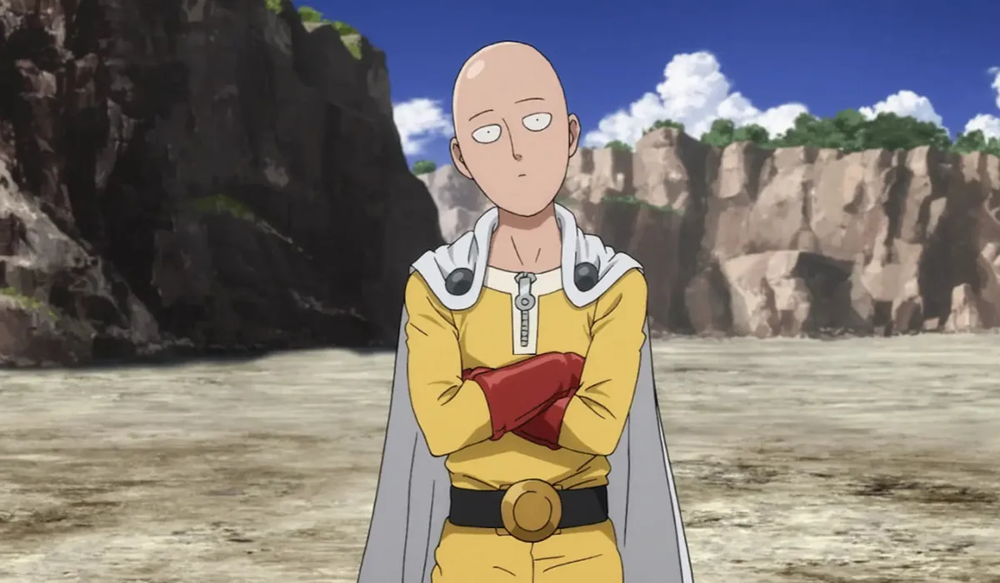
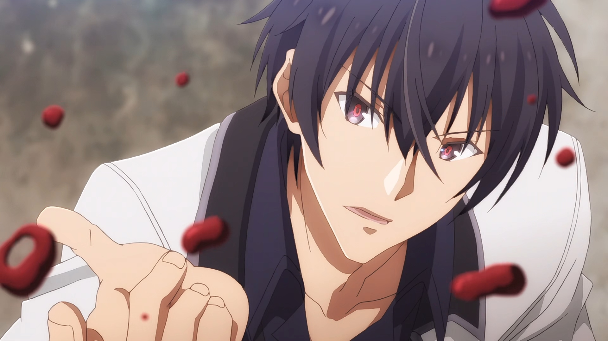
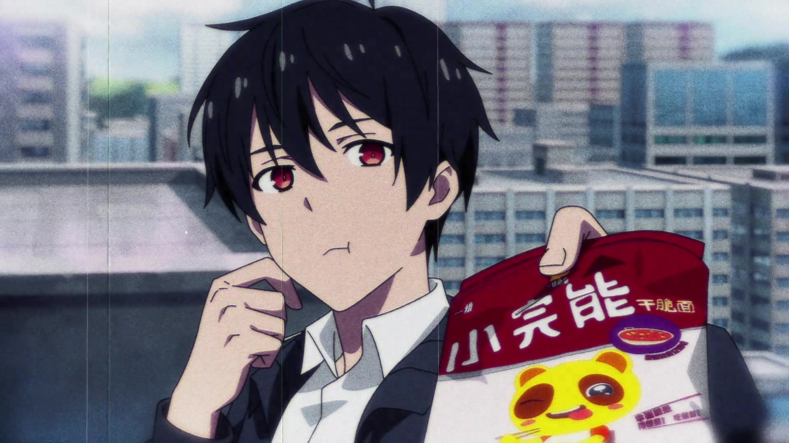
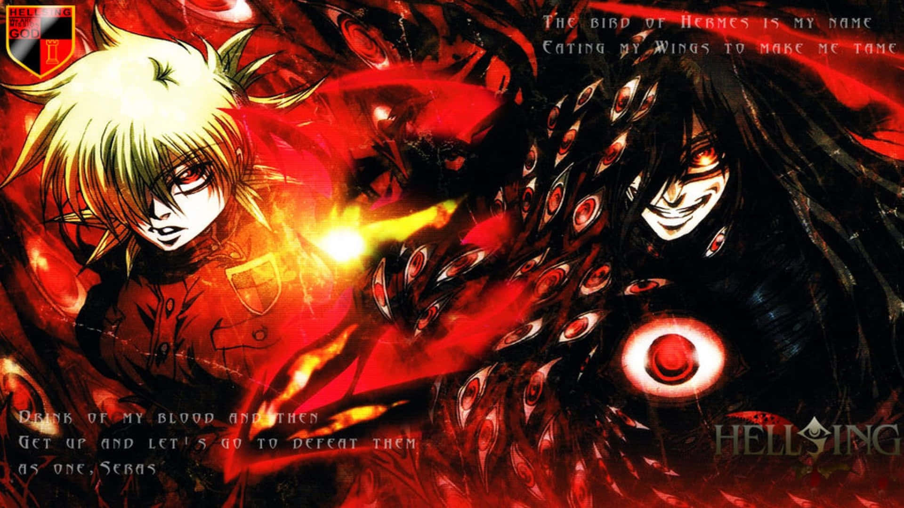
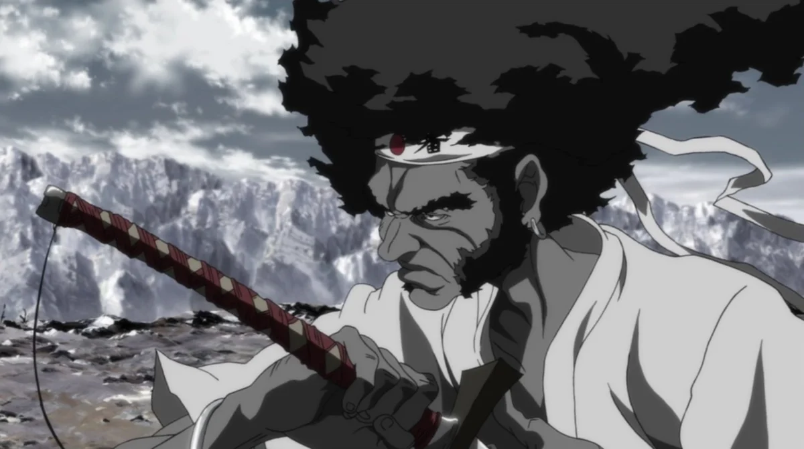
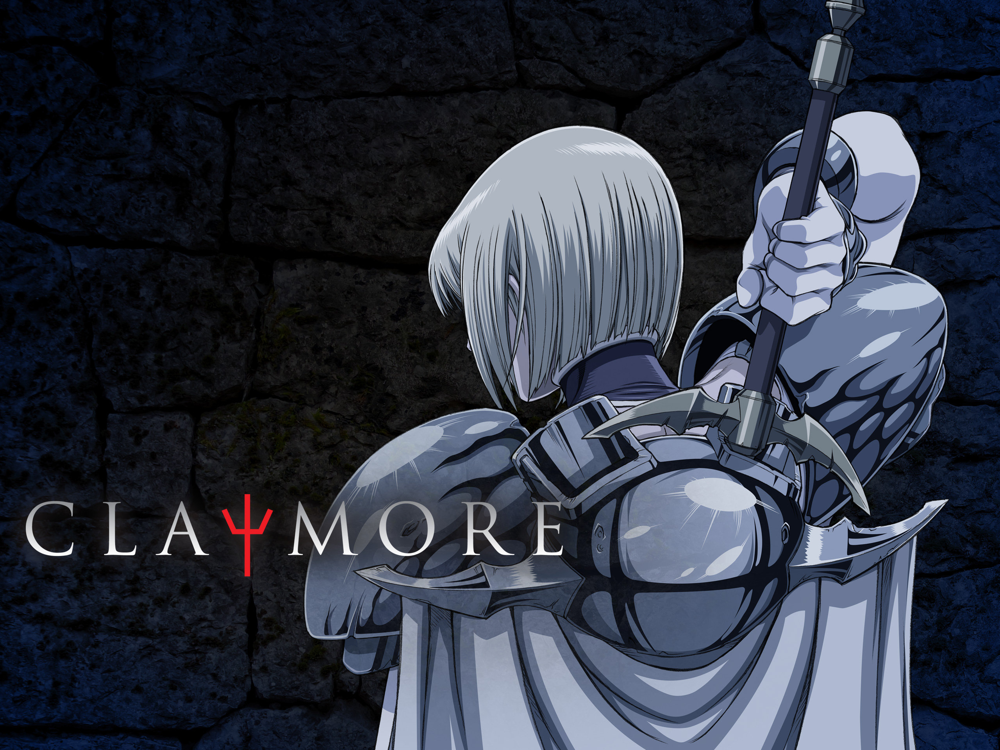

SMASH Senpai
Top 10 Anime With Overpowered Main Characters (Absolutely Broken)
Some anime protagonists don’t struggle. They don’t train for years. They don’t rely on luck or last-second power-ups.
They simply walk into fights — and end them. These are characters so overwhelmingly powerful that the story itself bends around them. Enemies aren’t obstacles. They’re reminders of how unfair the gap really is.
This list focuses on purely overpowered main characters. Not intelligence-based manipulation. Not mind games. Just overwhelming strength, presence, and raw dominance.
Every anime here features an MC whose strength, presence, or abilities completely dominate their world — often from the very beginning.
These are the Top 10 Anime With Overpowered Main Characters — where fights end fast, limits don’t exist, and the only real question is how much damage gets done along the way.
Sponsored
#1 One Punch Man
One Punch Man is the ultimate definition of an overpowered main character. From the very first episode, the anime makes one thing clear — Saitama has already surpassed every possible limit. There is no training arc to wait for, no hidden potential to unlock, and no enemy strong enough to challenge him.
What makes One Punch Man stand out is how it flips traditional battle anime logic on its head. Instead of asking whether the protagonist will win, the story asks a more interesting question: what happens after you’ve already reached absolute strength? Saitama’s fights end instantly, often with a single casual punch, turning climactic battles into anti-climaxes.
Despite its comedic tone, the anime explores a deeper sense of emptiness. Saitama’s overwhelming power has robbed him of excitement, purpose, and emotional fulfillment. While the world sees him as a hero, he struggles internally with boredom and detachment, making his journey unexpectedly human.
One Punch Man succeeds because it embraces excess without restraint. The animation exaggerates power, speed, and destruction to absurd levels, reinforcing just how unfair the gap truly is. It is an anime where the main character isn’t climbing the ladder — he’s already standing above it.
- Episode count: 12 (Season 1)
- Genre: Action, Comedy, Superhero
- Best for: Pure power fantasy, humor, explosive fights
- Why it works: The MC is unbeatable from the start

play anime smash or pass here (not sponsored)
SMASH SENPAI – Smash or Pass#2 Saga of Tanya the Evil

Saga of Tanya the Evil presents an overpowered main character in one of the most hostile and unforgiving settings in anime. Reincarnated into a war-driven world, Tanya Degurechaff is not powerful through raw muscle alone, but through overwhelming combat ability combined with absolute ruthlessness.
On the battlefield, Tanya is a nightmare. Her magical output, precision, and tactical dominance turn entire enemy units into collateral damage. She doesn’t hesitate, doesn’t show mercy, and doesn’t fight fair. Every encounter reinforces how wide the gap is between her and everyone else.
What makes Tanya truly terrifying is her mentality. She approaches war like a calculation, treating lives as numbers and outcomes as equations. This emotional detachment allows her to fully exploit her power without hesitation, making her victories feel brutal and absolute.
The anime’s dark tone amplifies the impact of her dominance. Explosions, aerial combat, and large-scale destruction are presented with weight and consequence, reminding viewers that this is not heroic fantasy — it is power unleashed in its most disturbing form.
- Episode count: 12
- Genre: Military, Action, Fantasy
- Best for: Dark power fantasy, war-focused storytelling
- Why it works: The MC dominates through power and brutality
Sponsored
#3 The Misfit of Demon King Academy
The Misfit of Demon King Academy wastes no time establishing how overpowered its main character truly is. Anos Voldigoad is not just strong — he exists on a completely different level from everyone around him. Rules, rankings, and hierarchies simply do not apply.
What makes Anos entertaining is how casually he flexes his power. Resurrection spells, reality-warping magic, and instant victories are treated as everyday actions. Enemies spend entire episodes building themselves up, only to be erased in seconds once Anos decides the fight is over.
The anime leans fully into excess. There is no attempt to balance the power scale or create artificial tension. Instead, the story derives satisfaction from watching the world slowly realize just how insignificant it is in the presence of the true Demon King.
Rather than focusing on struggle, the anime focuses on dominance. Every arc reinforces that Anos is not climbing toward supremacy — he is reclaiming a throne that was never truly taken from him.
- Episode count: 13
- Genre: Action, Fantasy, Demon
- Best for: Absurd power scaling, unapologetic dominance
- Why it works: The MC breaks the rules of his own world
#4 Daily Life of the Immortal King
The Daily Life of the Immortal King revolves around a protagonist whose power is so immense that existing normally becomes his greatest challenge. Wang Ling is not just strong — his abilities are capable of destroying reality itself if left unchecked.
Unlike traditional power-focused anime, the tension here comes from restraint. Wang Ling spends most of his time suppressing his strength, avoiding attention, and trying to live an ordinary school life. The humor and drama arise from how impossible that goal truly is.
When Wang Ling is forced to act, the results are overwhelming. Battles end instantly, threats evaporate, and enemies never stand a chance. The anime reinforces again and again that the world survives only because he chooses not to unleash his full power.
This balance between slice-of-life calm and catastrophic power makes the anime unique. The contrast highlights just how absurdly overpowered the main character is, turning even minor conflicts into reminders of his terrifying potential.
- Episode count: 15
- Genre: Action, Supernatural, Comedy
- Best for: Casual dominance, humor mixed with power fantasy
- Why it works: The MC must restrain god-like power
Sponsored
#5 Mob Psycho 100

Mob Psycho 100 presents an overpowered main character in a way that feels deeply personal and emotionally grounded. Shigeo Kageyama, known as Mob, possesses psychic abilities so strong that they can level entire city blocks, yet he actively avoids using them.
Unlike traditional power fantasy anime, Mob’s strength is not something he celebrates. His abilities are tied directly to his emotions, and when those emotions spiral out of control, the consequences are catastrophic. Every fight carries the tension of not whether Mob will win, but whether he will lose himself in the process.
When Mob finally reaches his breaking point, the anime delivers some of the most overwhelming displays of power in modern anime. Enemies are erased instantly, environments are destroyed effortlessly, and the gap between Mob and everyone else becomes terrifyingly clear.
Mob Psycho 100 succeeds because it treats overwhelming power as a burden rather than a reward. Mob’s journey is not about becoming stronger, but about becoming human — even though his strength has already surpassed all limits.
- Episode count: 12
- Genre: Action, Supernatural, Psychological
- Best for: Emotional storytelling with explosive power
- Why it works: The MC’s power is uncontrollable and absolute
#6 Elfen Lied

Elfen Lied introduces an overpowered main character in one of the most brutal and disturbing ways possible. Lucy’s abilities are not flashy or heroic — they are silent, invisible, and horrifyingly lethal. With a single thought, she can tear enemies apart without ever touching them.
What makes Lucy terrifying is the sheer imbalance of power. Armed forces, special units, and trained professionals stand no chance against her. Entire squads are wiped out in seconds, reinforcing that resistance is meaningless once she decides to act.
The anime does not glorify this power. Instead, it presents it as tragic and destructive, born from trauma, isolation, and hatred. Lucy’s strength isolates her from humanity, turning her into both a victim and a monster.
Elfen Lied remains unforgettable because of how mercilessly it portrays overwhelming power. There are no prolonged battles or dramatic comebacks — only sudden, irreversible violence that leaves lasting emotional scars.
- Episode count: 13
- Genre: Horror, Psychological, Supernatural
- Best for: Dark, brutal power fantasy
- Why it works: The MC’s power is uncontested and horrifying
Sponsored
#7 Hellsing Ultimate
Hellsing Ultimate features one of the most unapologetically overpowered main characters in anime history. Alucard is not simply strong — he is effectively immortal, unkillable, and unrestricted once unleashed.
From the moment Alucard enters a battlefield, the outcome is already decided. Bullets, explosions, and supernatural attacks barely slow him down. Enemies who believe themselves powerful are dismantled with brutal ease, often without Alucard even taking them seriously.
What makes Alucard’s dominance compelling is how the anime leans into excess. Violence is exaggerated, destruction is relentless, and Alucard’s enjoyment of combat reinforces just how untouchable he truly is.
Hellsing Ultimate never pretends that Alucard is balanced. The series thrives on watching supposedly powerful beings realize they are completely outmatched, cementing Alucard as a walking embodiment of death.
- Episode count: 10 (OVAs)
- Genre: Action, Horror, Supernatural
- Best for: Brutal dominance, gothic violence
- Why it works: The MC is functionally immortal
#8 Afro Samurai
Afro Samurai delivers an overpowered main character through pure combat mastery. Afro is not superhuman in a traditional sense, but his skill with the sword is so refined that opponents barely register as threats.
Every fight reinforces how far above everyone else Afro stands. Groups of enemies fall in seconds, elite warriors are defeated effortlessly, and even legendary fighters struggle to keep up with his speed and precision.
The anime’s visual style amplifies Afro’s dominance. Battles are swift, violent, and decisive, emphasizing that hesitation means death. Afro’s calm demeanor contrasts sharply with the chaos he creates.
Afro Samurai succeeds because it strips power down to its rawest form — absolute superiority in combat. Afro doesn’t boast, doesn’t explain, and doesn’t hesitate. He simply ends fights.
- Episode count: 5
- Genre: Action, Samurai
- Best for: Stylish violence and pure combat dominance
- Why it works: The MC outclasses everyone skill-wise
#9 Dororo

Dororo presents an unconventional overpowered main character through Hyakkimaru, a warrior who begins life robbed of his body parts and senses. Despite this, his combat ability far surpasses that of ordinary humans.
As Hyakkimaru battles demons to reclaim what was taken from him, his power only grows more terrifying. Each fight is decisive, with enemies falling quickly once he engages them seriously.
What makes Hyakkimaru compelling is the contrast between his physical condition and his effectiveness in battle. Even without sight, hearing, or touch, he cuts down demons effortlessly, reinforcing just how overwhelming his strength is.
Dororo balances tragedy with dominance, showing that power does not erase pain. Hyakkimaru’s victories come at a cost, making his strength feel earned and heavy.
- Episode count: 24
- Genre: Action, Dark Fantasy
- Best for: Emotional storytelling with brutal fights
- Why it works: The MC’s strength overwhelms supernatural threats
#10 Claymore
Claymore features overpowered protagonists in a dark, oppressive world where survival depends entirely on strength. Clare, while appearing quiet and reserved, possesses power far beyond that of ordinary humans.
Battles in Claymore are brutal and unforgiving. Once a Claymore unleashes her strength, enemies are torn apart with overwhelming speed and force. The anime makes it clear that humans are completely helpless without these warriors.
What separates Claymore from standard power fantasy is its tone. Power is dangerous, corrupting, and often comes with devastating consequences. Every victory brings the risk of losing control.
Claymore leaves a lasting impression by portraying strength as both salvation and curse. The protagonists stand above the world they protect, yet are never truly part of it.
- Episode count: 26
- Genre: Action, Dark Fantasy
- Best for: Gritty combat and tragic power scaling
- Why it works: The MC’s strength eclipses ordinary beings
Play Smash or Pass on SMASH Senpai.
 PLAY SMASH OR PASS
PLAY SMASH OR PASS